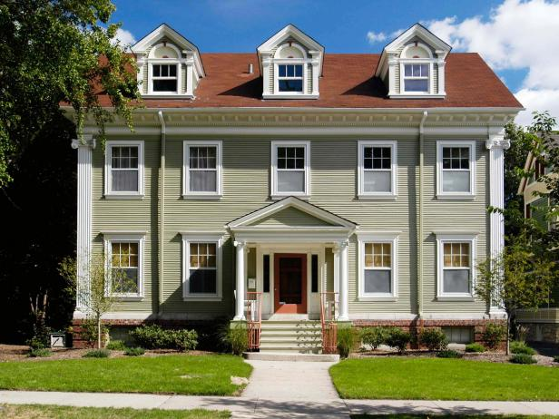
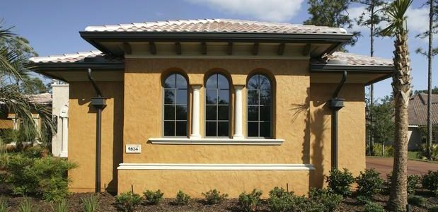
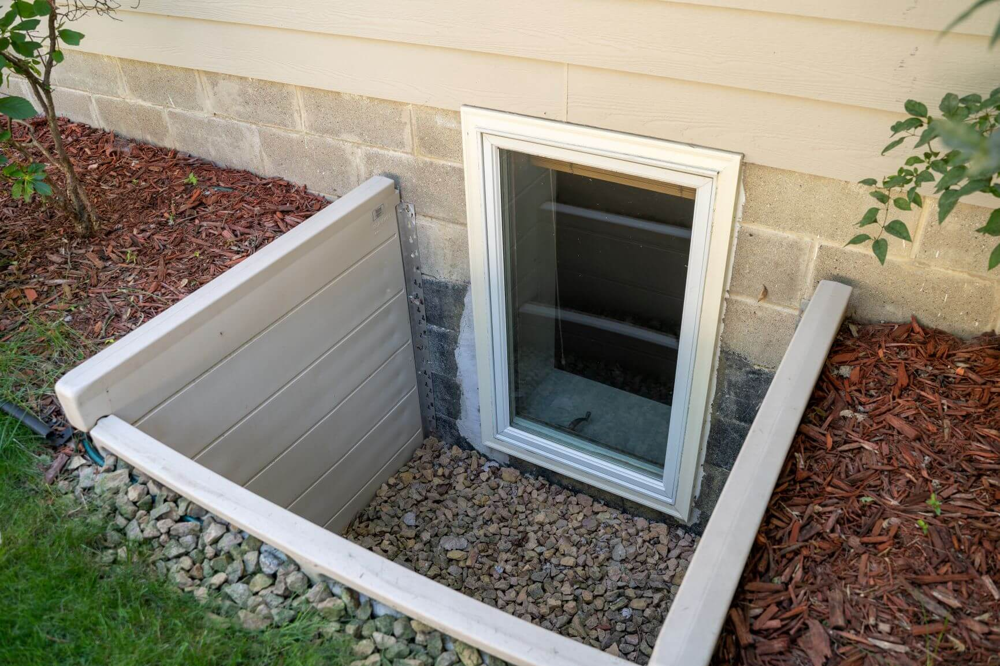

RANCH (ראנץ')
אולי הסוג הפופולארי ביותר והאהוב ביותר, יש הרבה סוגים של בתים מסוג ראנץ, אבל הייחוד של הבתים מסוג זה הוא שיש קומה אחת, דגם זה מאוד פופולארי בקרב משפחות ואנשים מבוגרים.

כל הידע המקצועי של OSCR GROUP מונגש עבורכם במקום אחד. בחרו נושא מהתפריט בצד כדי ללמוד על מרכיבי הבית.
אולי הסוג הפופולארי ביותר והאהוב ביותר, יש הרבה סוגים של בתים מסוג ראנץ, אבל הייחוד של הבתים מסוג זה הוא שיש קומה אחת, דגם זה מאוד פופולארי בקרב משפחות ואנשים מבוגרים.
סוג בית זה גם נפוץ מאוד בארה"ב, בדרך כלל ישתמשו בחומרים טבעיים בבתים מסוג זה כגון: אבנים,עץ ולבנים. סימן ההיכר של סוג בית זה הוא הגג השפיצי והמרפסת הקדמית הגדולה שבדרך כלל תחובר לשני עמודים, אי אפשר לפספס את החזית של הבאנגלו. לרוב תהיה קומה אחת בבית מסוג באנגלו אך יש בתים עם שתי קומות גם.

מאוד קל לזהות סוג בית זה לפי ה-DORMER והגג עם השיפוע החד מאוד. הדורמר הוא החלון הקטן בקומה השניה. ברוב הבתים תהיה גם ארובה (chimney) גדולה.

בתים מהתקופה הויקטוריאנית 1830-1910, בתים אלו נראים ממש כמו ארמונות וכאשר הם משומרים במצב טוב הם מהממים ביופיים.
בתים מודרנים הם בתים שנבנו בעשרות השנים האחרונות, לבתים כמובן מראה מודרני והפוקוס הוא על הפונקציונאליות של הבית לטובת דיירי הבית. החומרים בדרך כלל יהיו חסכוניים באנרגיה, חלונות גדולים כדי להכניס הרבה אור הביתה וגם נסיון להכניס את החוץ לתוך הבית. לבתים מודרנים יש קוים נקיים והם נבנים מחומרים שמחזיקים מעמד זמן רב.
![[Image of בית מודרני]](Contemporary-Modern.jpg)
אלו בתים מרשימים ביופיים מתקופת ההתיישבות בארה"ב ויכולים להגיע עד לשנת 1600. תוכלו לזהות אותם לפי החלונות הסמטריים בחזית, לרוב יהיו מספר דורמרס ועמודים בכניסה לבית. בדרך כלל אלו בתים גדולים מאוד.
הסוג הנפוץ ביותר בבתי מגורים בארה"ב. הסיבה שזה הגג הנפוץ ביותר היא שהוא זול ואורך החיים שלו הוא 15-20 שנה. כפי שאמר הקבלן בסרטון, גג מסוג זה "צפוי" להחזיק מעמד כ-30 שנה, אך בפועל הוא יחזיק קרוב יותר ל-15 שנים.

גג רעפים, מוסיף הרבה אופי לבית אבל קחו חשבון שלמרות שהוא עמיד יותר מגג אספלט "רגיל", גג רעפים צפוי להחזיק 50-70 שנה, הוא גם שביר יותר ולכן אינו מתאים לאזורים עם מזג אויר משתנה ובמיוחד אינו מתאים לאזורים עם תנאי מזג קשים שבהם יש סופות.

אם אתם משפצים / בונים בית יוקרתי יכול להיות שתרצו להשתמש בחומר זה, סלייט רוף יכול להחזיק גם 100 שנה והוא מאוד יפה, אבל קחו בחשבון שהוא מאוד יקר, כבד מאוד, ונשבר בקלות שדורכים עליו.

פחות נפוץ בבתים פרטים, תוכלו לראות אותו בעיקר בגגות שטוחים בדופלקסים או פורפלקסים. הגג יחסית יקר ויכול להחזיק עד 50 שנה. תחזוקה מאוד נמוכה וייצור הגג הוא אקולוגי לסביבה ולרוב יכיל גומי ממוחזר.

מחזיק בין 40-70 שנה. עמיד לסופות, קל תחזוקה, לא מתלקח בשריפה, גג מתכת הוא ירוק ויכול להוזיל עלויות קירור ב-10-25 אחוז. עם זאת, הוא מרעיש ויכול לעלות פי 3 מגג אספלט.

סוג זה מאוד פופולארי מפני שהוא זול, עמיד לאורך זמן וקל לתחזוקה. אם הנכס נראה רע עם ירוקת או עובש, לרוב הם ירדו בשטיפה בלחץ גבוה והחוץ יראה כמו חדש בעלות של מספר מאות דולרים בלבד. זה סוג של פלסטיק, קל להרכבה ויש היום הרבה דגמים כולל דמוי עץ.

חיפוי עץ לבית יכול להיראות מאוד יפה וטבעי, אך קחו בחשבון שעץ באיכות גבוהה יהיה מאוד יקר, יש לתחזק סיידינג מסוג עץ אחת לשנה שנתיים, לשייף ולצבוע צבע שהתקלף.

שליכט מבודד אשר מכיל אפוקסי. סטאקו נראה מאוד יפה, במיוחד למי שאוהב קוים נקיים והוא יכול להחזיק המון שנים בטיפול נכון באזורים יבשים. פחות מומלץ להשתמש בסטאקו באזורים עם הרבה גשם.
קל מאוד לזהות את הבתים עם הלבנים האדומות. לבנים קלים לתחזוקה, מחזיקים מעמד בדרך כלל לאורך כל חיי הבית. סוג זה נחשב יקר יותר גם מבחינת עלות החומר וגם מבחינת עלות העבודה.


בבתים עם יסודות מסוג SLAB אין מרתף. הבית יושב על משטח בטון יצוק, שהוא הבסיס לבית. למעשה רק הצנרת מחוברת למשטח היסודות ומכאן גם החסרון הגדול: קשה מאוד לתקן נזילות. סוג זה פופולארי בבניה חדשה כי הוא זול ומהיר ואין סיכוי לעובש מתחת לבית.

מרתף חפור נותן בסיס טוב יותר לבית והוא נחפר לעומק של 8 רגל מתחת לגובה הבית. אם המרתף גמור (FINISHED) הוא משמש כשטח מגורים נוסף.

כדי שהמרתף יחשב ל-SQFT של הבית חייב להיות פתח מילוט בכל חדר במרתף.
מסגרות עץ שלרוב כבר רקובות חלקית. דורשים תחזוקה שנתית כבדה של קילוף וצביעה. הבידוד גרוע מאוד וברוב המקרים זו זכוכית אחת או פלסטיק וקשה מאוד להזיז אותם.
גם כאן הכוונה לחלונות ישנים עם זכוכית אחת. אם מדובר בנכס להשכרה (Rental) והם במצב טוב, שווה לשקול להשאיר אותם.
חלונות חדשים עם זכוכית כפולה לבידוד טוב יותר. קלים לתפעול, ללא תחזוקה ופופולאריים מאוד בבתים עד שווי של $300,000. יש להתאים את רמת האיכות לשווי הבית.